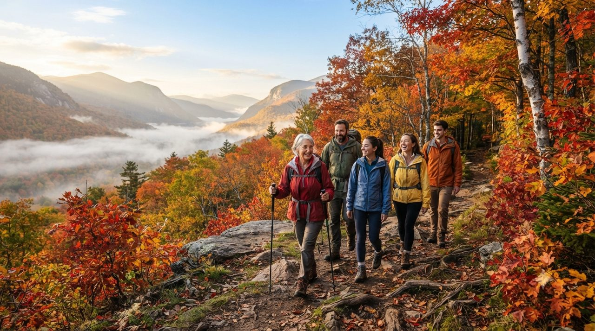

단풍 절정, 주말 산행객 몰려 안전 수칙 지켜야
입력 2026.11.18 09:00 | 이가을 기자
구독하기 좋아요 공유하기

전국 주요 산이 붉고 노랗게 물들며 단풍이 절정을 맞았다. 주말을 맞아 가족과 친구 단위 산행객이 몰리며 등산로가 오랜만에 활기를 띠었다.
단풍은 낮이 짧아지고 기온이 내려가면 잎에서 초록 색소가 줄어들면서 생긴다. 숨어 있던 노란 색소가 드러나고, 붉은 색소가 새로 만들어지면서 산 전체가 알록달록하게 바뀐다.
아이와 함께 산을 찾은 한 시민은 "사진으로만 보던 풍경을 직접 보니 피로가 풀린다"고 말했다. 정상 근처 전망대에는 단풍을 배경으로 사진을 찍으려는 사람들이 줄을 섰다.
광고
하지만 가을 산은 해가 빨리 지고 아침저녁 기온 차가 크다. 산악 구조 전문가들은 오후 3시 전에는 하산을 시작하고, 얇은 옷을 여러 겹 챙겨 체온을 조절하라고 강조한다.
낙엽이 쌓인 길은 생각보다 미끄럽다. 내리막에서는 무릎을 살짝 굽히고 보폭을 줄이는 것이 좋다. 등산 스틱을 쓰면 무릎에 가는 부담을 줄일 수 있다.
물과 간식, 휴대폰 보조 배터리도 꼭 챙겨야 한다. 길을 잃었을 때는 무리하게 움직이지 말고 등산로의 위치 표지판 번호를 확인해 구조 요청을 하는 것이 안전하다.
관리 당국은 단풍철 동안 주요 등산로 입구에 안내 인력을 배치하고, 혼잡한 구간은 한 방향으로만 오르내리도록 안내할 예정이다.
관련 기사 더보기
댓글 0
무단 전재 및 재배포 금지
이가을 기자 sori@example.com